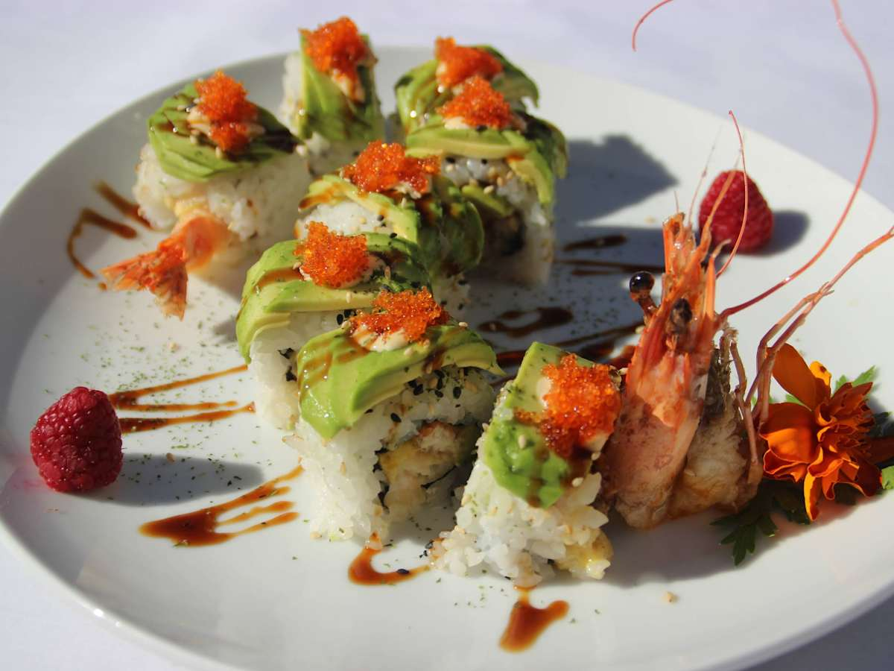
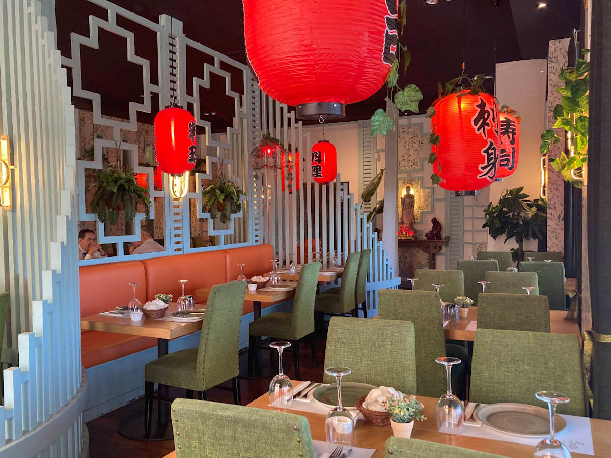
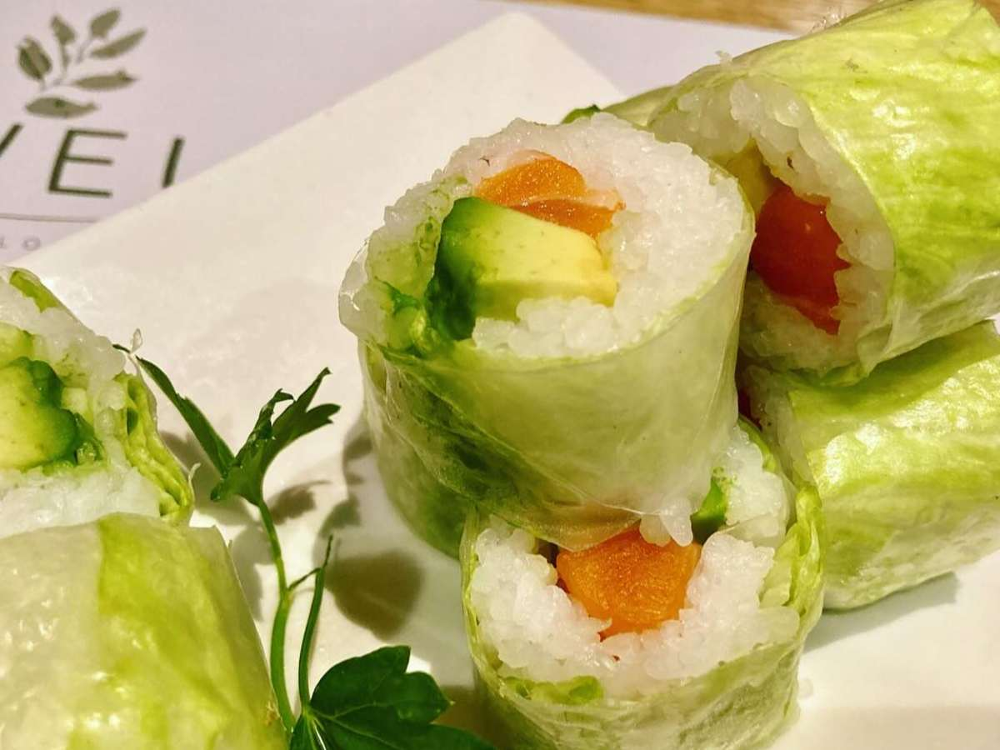
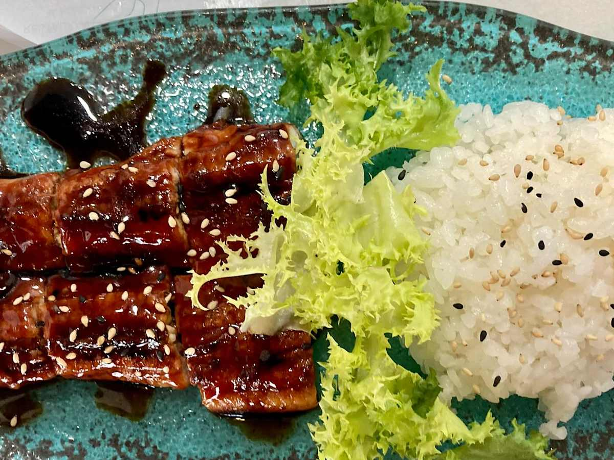
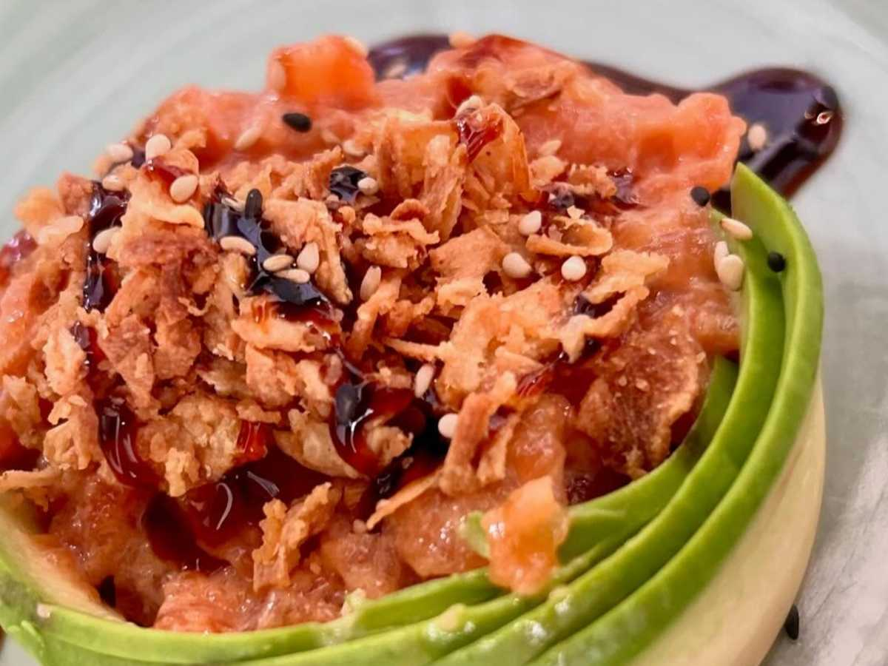
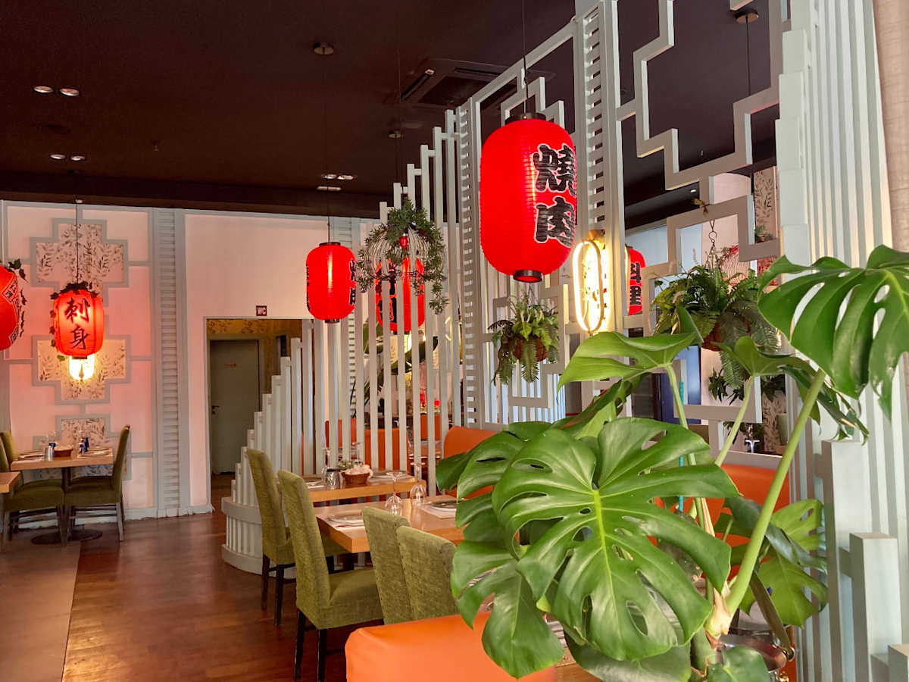
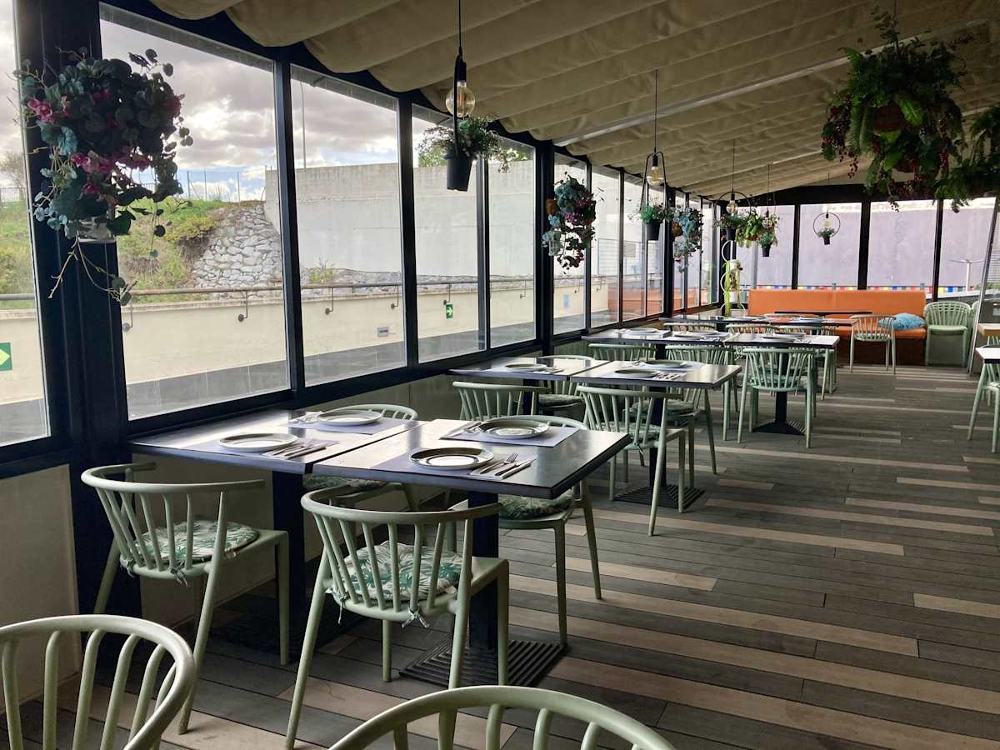
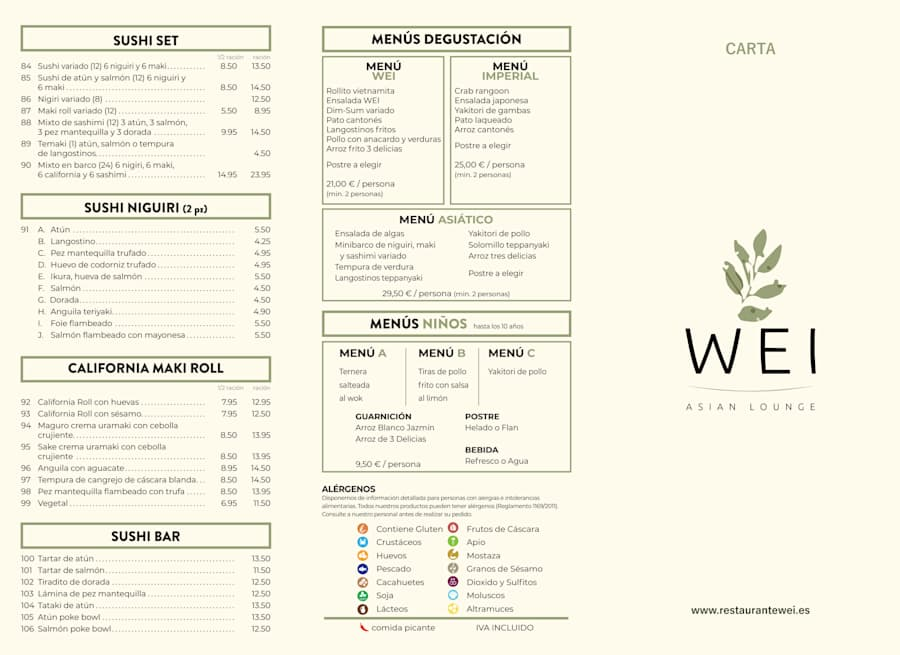

Cocina fusión oriental
Sabores de varias regiones asiáticas con una presentación cuidada.

Cocina oriental · Sushi · Dim Sum · Teppanyaki · Menús degustación
Sabores de Japón, Cantón, Tailandia e India en un espacio moderno, cálido y único.
Experiencia
Nuestra cocina oriental combina sabores de Japón, Cantón, Tailandia e India, preparada por cocineros con más de 20 años de experiencia. En WEI Asian Lounge cada plato está pensado para disfrutar de un momento especial en un espacio moderno, acogedor y cuidado.

Sabores de varias regiones asiáticas con una presentación cuidada.
Bocados frescos, rollos, nigiris, gyozas y piezas para compartir.
Plancha japonesa, arroces, fideos y salteados con sabor intenso.
Ven al restaurante, reserva online o pide comida para disfrutar en casa.
Destacados

Rolls y piezas con aguacate, salmón y acabados delicados.

Creps, pepino, cebollino y salsa hoisin.
26,95 €
Dados de atún sobre base de arroz, coronado con wakame.
13,50 €
Con huevo, pollo, ternera, langostinos, verduras y soja.
9,95 €Con solomillo, gambas, huevo y verduras a la plancha japonesa.
9,50 €
Fideos planos de arroz con langostinos, lima, huevo y tamarindo.
10,50 €Degustación
Una forma perfecta de descubrir la cocina WEI: entrantes, sushi, wok, dim sum, carnes, pescados y especialidades asiáticas en una experiencia pensada para disfrutar sin prisas.
Consultar menús
Galería
Reseñas
“La calidad-precio de la comida está muy bien y el personal es muy amable.”
Opinión pública“Servicio y atención en reserva excelente. Recepción súper. Comida excelente.”
Opinión pública“Pasamos un día estupendo en familia y muy buen servicio del personal que atendió nuestra mesa.”
Opinión pública“Buena calidad.”
Opinión públicaUbicación
Reserva mesa, pide comida a domicilio o ven a disfrutar de una experiencia asiática en Montecarmelo.
Centro Comercial Monte CarmeloContacto
Sin email ni redes inventadas: contacto directo por teléfono, reserva online, Maps o pedidos.